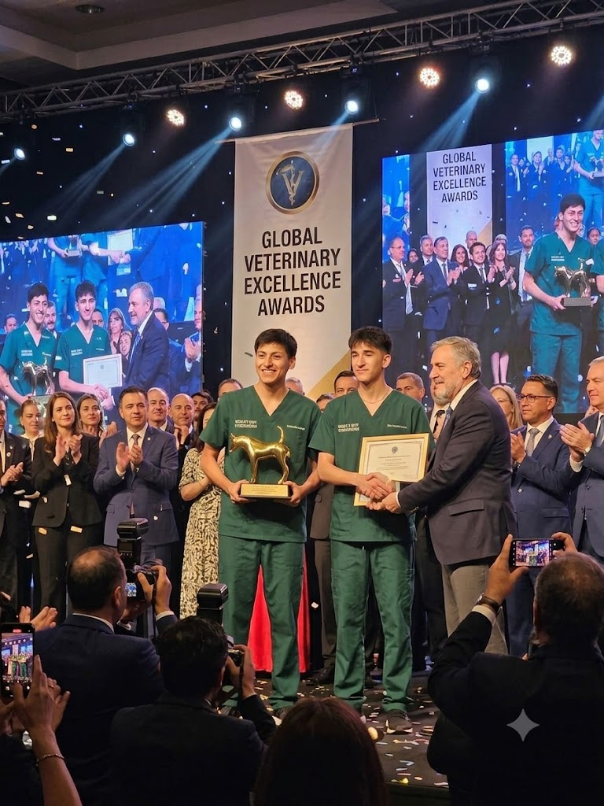
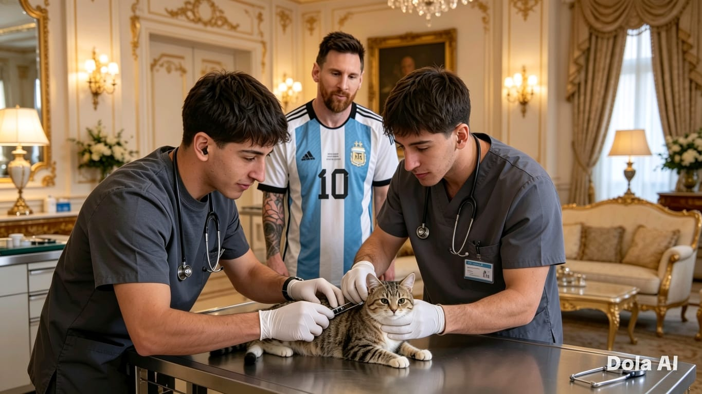

DR.AMAYA Y DR.CAMACHO RECIBIENDO EL PREMIO A:
LOS MEJORES VETERINARIOS DEL MUNDO
EN EL EVENTO:
GLOBAL VETERINARY EXCELLENCE AWARDS

SERVICIO REALIZADO A NUESTRO AMIGO:
LIONEL ANDRÉS
MESSI CUCCITINI